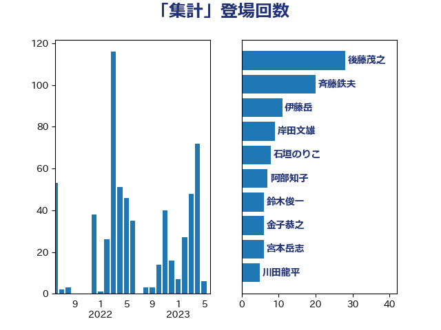

単語「集計」

| 田村憲久 | 自由民主党 | 32 回 |
| 後藤茂之 | 自由民主党 | 24 回 |
| 斉藤鉄夫 | 公明党 | 19 回 |
| 伊藤岳 | 日本共産党 | 10 回 |
| 田村まみ | 国民民主党 | 8 回 |
| 石垣のりこ | 立憲民主党 | 8 回 |
| 梶山弘志 | 自由民主党 | 7 回 |
| 西村康稔 | 自由民主党 | 7 回 |
| 平沢勝栄 | 自由民主党 | 6 回 |
| 金子恭之 | 自由民主党 | 6 回 |
| 長坂康正 | 自由民主党 | 6 回 |
| 阿部知子 | 立憲民主党 | 6 回 |
| 上川陽子 | 自由民主党 | 5 回 |
| 石井苗子 | 日本維新の会 | 5 回 |
| 嘉田由紀子 | 無所属 | 4 回 |
| 山本博司 | 公明党 | 4 回 |
| 岩渕友 | 日本共産党 | 4 回 |
| 岸田文雄 | 自由民主党 | 4 回 |
| 川田龍平 | 立憲民主党 | 4 回 |
| 打越さく良 | 立憲民主党 | 4 回 |
| 杉田水脈 | 自由民主党 | 4 回 |
| 田村貴昭 | 日本共産党 | 4 回 |
| 西銘恒三郎 | 自由民主党 | 4 回 |
| 鈴木俊一 | 自由民主党 | 4 回 |
| 伊佐進一 | 公明党 | 3 回 |
| 岸信夫 | 自由民主党 | 3 回 |
| 田村智子 | 日本共産党 | 3 回 |
| 竹谷とし子 | 公明党 | 3 回 |
| 吉川沙織 | 立憲民主党 | 2 回 |
| 奥野総一郎 | 立憲民主党 | 2 回 |
| 宮本岳志 | 日本共産党 | 2 回 |
| 寺田静 | 無所属 | 2 回 |
| 小沢雅仁 | 立憲民主党 | 2 回 |
| 山崎誠 | 立憲民主党 | 2 回 |
| 平井卓也 | 自由民主党 | 2 回 |
| 杉尾秀哉 | 立憲民主党 | 2 回 |
| 柚木道義 | 立憲民主党 | 2 回 |
| 熊野正士 | 公明党 | 2 回 |
| 牧山ひろえ | 立憲民主党 | 2 回 |
| 菅義偉 | 自由民主党 | 2 回 |
| 萩生田光一 | 自由民主党 | 2 回 |
| 野田聖子 | 自由民主党 | 2 回 |
| 金子恵美 | 立憲民主党 | 2 回 |
| おおつき紅葉 | 立憲民主党 | 1 回 |
| こやり隆史 | 自由民主党 | 1 回 |
| 一谷勇一郎 | 日本維新の会 | 1 回 |
| 三浦靖 | 自由民主党 | 1 回 |
| 上田清司 | 国民民主党 | 1 回 |
| 中山展宏 | 自由民主党 | 1 回 |
| 丸川珠代 | 自由民主党 | 1 回 |
| 井上哲士 | 日本共産党 | 1 回 |
| 倉林明子 | 日本共産党 | 1 回 |
| 吉田宣弘 | 公明党 | 1 回 |
| 吉田忠智 | 立憲民主党 | 1 回 |
| 吉良よし子 | 日本共産党 | 1 回 |
| 坂本哲志 | 自由民主党 | 1 回 |
| 大西健介 | 立憲民主党 | 1 回 |
| 安江伸夫 | 公明党 | 1 回 |
| 安達澄 | 無所属 | 1 回 |
| 宮本徹 | 日本共産党 | 1 回 |
| 小寺裕雄 | 自由民主党 | 1 回 |
| 小林史明 | 自由民主党 | 1 回 |
| 山下芳生 | 日本共産党 | 1 回 |
| 山本太郎 | れいわ新選組 | 1 回 |
| 山添拓 | 日本共産党 | 1 回 |
| 山際大志郎 | 自由民主党 | 1 回 |
| 岩田和親 | 自由民主党 | 1 回 |
| 平木大作 | 公明党 | 1 回 |
| 新垣邦男 | 立憲民主党 | 1 回 |
| 末松信介 | 自由民主党 | 1 回 |
| 末松義規 | 立憲民主党 | 1 回 |
| 本田太郎 | 自由民主党 | 1 回 |
| 松山政司 | 自由民主党 | 1 回 |
| 柴田巧 | 日本維新の会 | 1 回 |
| 横山信一 | 公明党 | 1 回 |
| 櫛渕万里 | れいわ新選組 | 1 回 |
| 水岡俊一 | 立憲民主党 | 1 回 |
| 浅野哲 | 国民民主党 | 1 回 |
| 浜口誠 | 国民民主党 | 1 回 |
| 渡辺周 | 立憲民主党 | 1 回 |
| 渡辺孝一 | 自由民主党 | 1 回 |
| 滝波宏文 | 自由民主党 | 1 回 |
| 片山大介 | 日本維新の会 | 1 回 |
| 牧島かれん | 自由民主党 | 1 回 |
| 田島麻衣子 | 立憲民主党 | 1 回 |
| 石川博崇 | 公明党 | 1 回 |
| 福山哲郎 | 立憲民主党 | 1 回 |
| 福島みずほ | 社会民主党 | 1 回 |
| 秋野公造 | 公明党 | 1 回 |
| 紙智子 | 日本共産党 | 1 回 |
| 美延映夫 | 日本維新の会 | 1 回 |
| 舩後靖彦 | れいわ新選組 | 1 回 |
| 芳賀道也 | 国民民主党 | 1 回 |
| 若宮健嗣 | 自由民主党 | 1 回 |
| 若松謙維 | 公明党 | 1 回 |
| 重徳和彦 | 立憲民主党 | 1 回 |
| 野上浩太郎 | 自由民主党 | 1 回 |
| 金村龍那 | 日本維新の会 | 1 回 |
| 鈴木庸介 | 立憲民主党 | 1 回 |
| 長友慎治 | 国民民主党 | 1 回 |
| 長浜博行 | 無所属 | 1 回 |
| 阿部司 | 日本維新の会 | 1 回 |
| 音喜多駿 | 日本維新の会 | 1 回 |
| 高木かおり | 日本維新の会 | 1 回 |
| 鳩山二郎 | 自由民主党 | 1 回 |